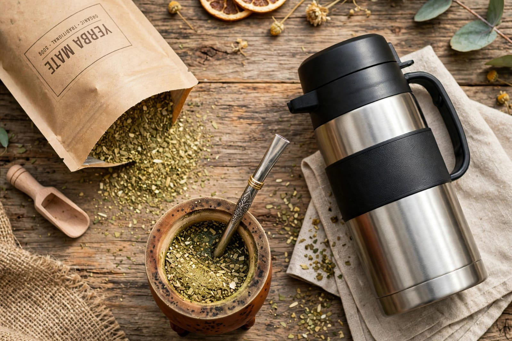

Yerba organica 500g

Suave . Aromatica . Organica
>Desde las tierras de misiones, yerba mate organica y artesanal. Sabor autentico, cosechado con cuidado, para tus momentos diarios.
<
Descubri nuestra seleccion de yerbas artesanales, organicas y con hierbas..-
Suave . Aromatica . Organica

Sabor tradicional

Menta- Manzanilla- Digestiva

Ahumada- Intensa